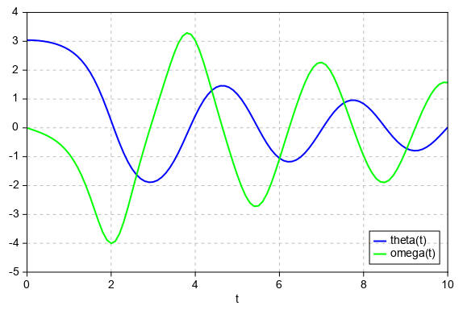

odeint¶
- mipylib.numeric.integrate.odeint(func, y0, t, args=())¶
Integrate a system of ordinary differential equations.
- Parameters
func – (callable(y, t, …) ) Computes the derivative of y at t.
y0 – (array) Initial condition on y (can be a vector).
t – (array) A sequence of time points for which to solve for y. The initial value point should be the first element of this sequence.
args – (tuple) Extra arguments to pass to function.
- Returns
Array containing the value of y for each desired time in t.
The second order differential equation for the angle theta of a pendulum acted on by gravity with friction.
from mipylib.numeric.integrate import odeint def pend(y, t, b, c): theta, omega = y dydt = [omega, -b*omega - c*np.sin(theta)] return dydt b = 0.25 c = 5.0 y0 = [pi - 0.1, 0.0] t = linspace(0, 10, 101) sol = odeint(pend, y0, t, args=(b, c)) plot(t, sol[:, 0], 'b', label='theta(t)', linewidth=2) plot(t, sol[:, 1], 'g', label='omega(t)', linewidth=2) legend(loc='lower right') xlabel('t') grid()
Lorentz absorber.
from mipylib.numeric import integrate def lorenz(p,t,s,r,b): x,y,z = p return s*(y-x), x*(r-z)-y, x*y-b*z # dx/dt,dy/dt,dz/dt t = np.arange(0, 30, 0.01) track1 = integrate.odeint(lorenz, (0.0,1.00,0.0), t, args=(10.0,28.0,2.6)) track2 = integrate.odeint(lorenz, (0.0,1.01,0.0), t, args=(10.0,28.0,2.6)) axes3d() plot3(track1[:,0], track1[:,1], track1[:,2], linewidth=2, color='r') plot3(track2[:,0], track2[:,1], track2[:,2], linewidth=2, color='g')